Poppy Snowdrop Paper Co
- Cliente
- Poppy Snowdrop Paper Co
- Ano
- 2022
- Projeto
- Brand Design
- O que incluiu
- Logo, Paleta de cores, Tipografia, Ilustrações, Padronagens
Poppy Snowdrop Paper Co
Poppy Snowdrop é uma loja baseada no Etsy que oferece flores artificiais de luxo feitas à mão, papelaria e artigos para festas.
A história por trás do negócio é cheia de tristeza e perda, então queríamos criar uma identidade visual que transmitisse alegria, extroversão, autenticidade e felicidade.
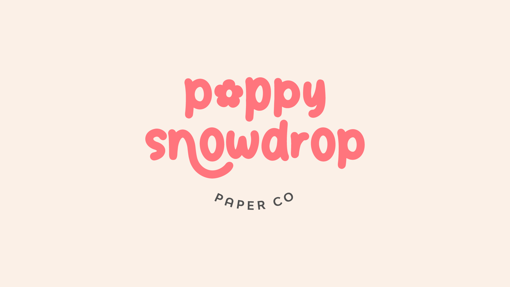

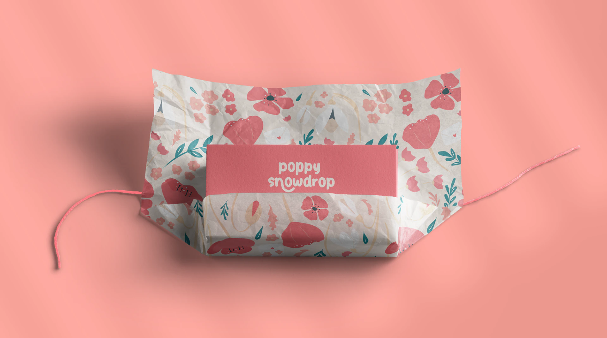
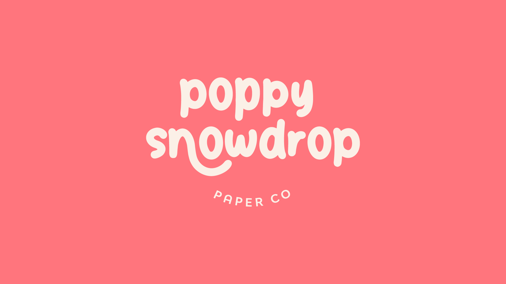
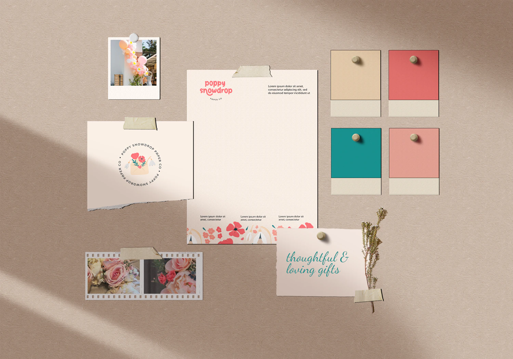

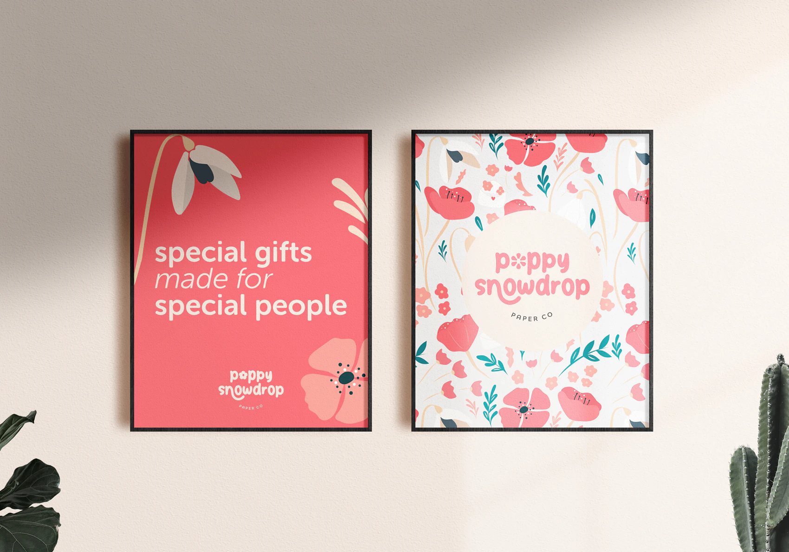
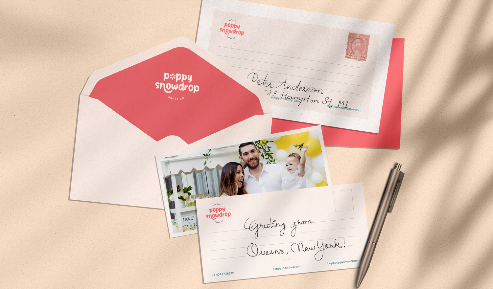

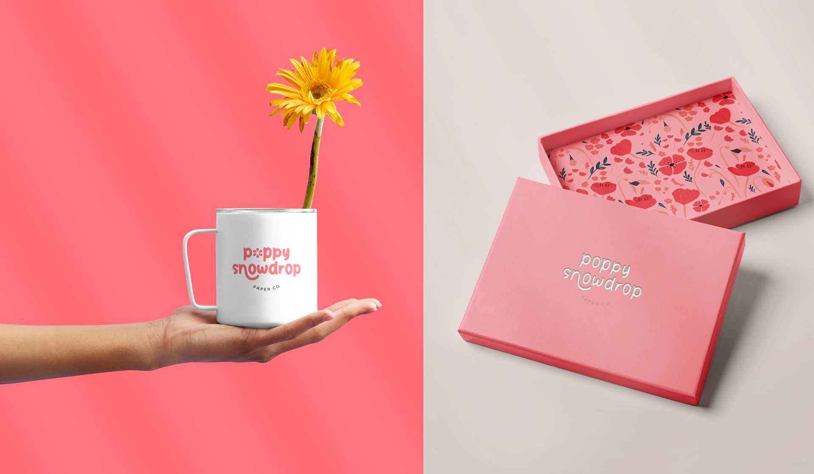
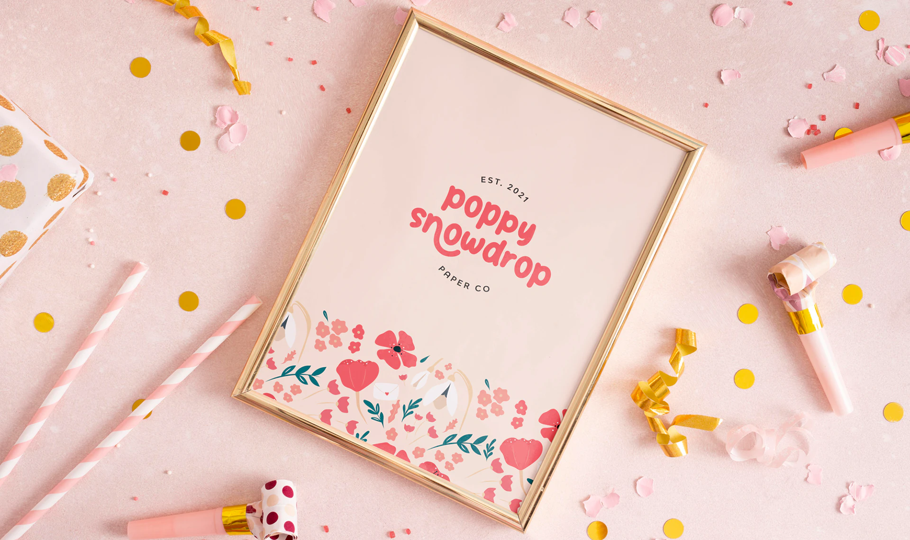

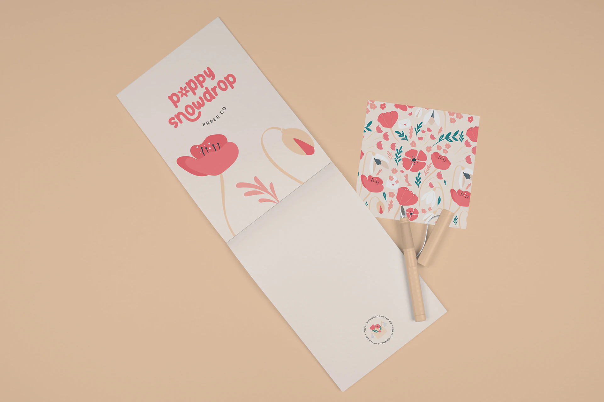
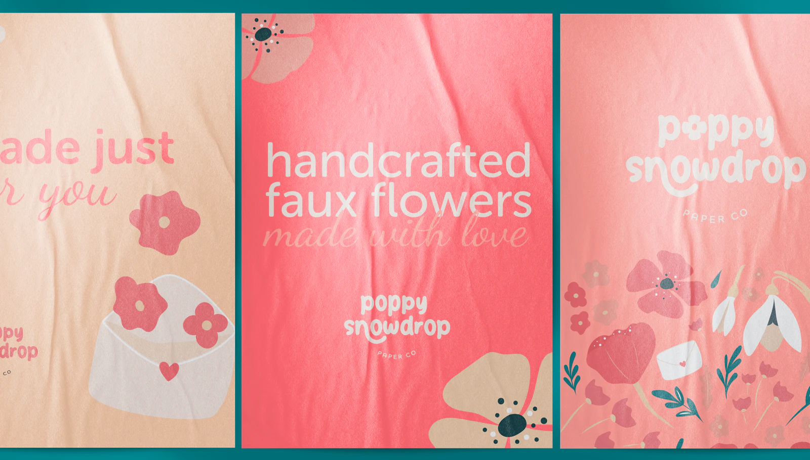
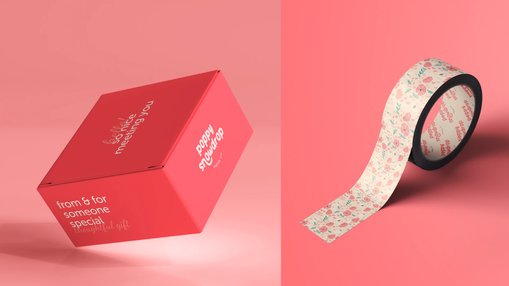
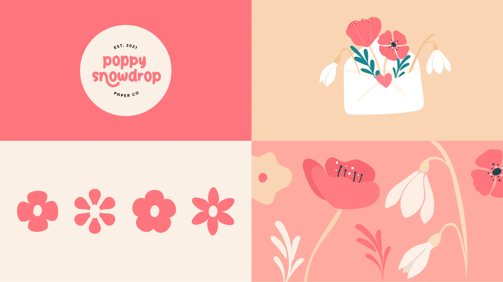
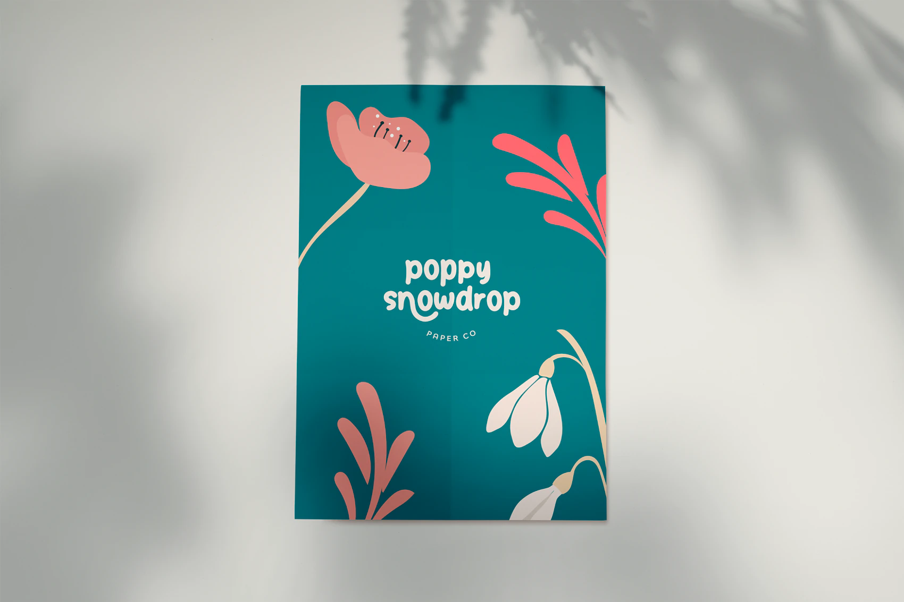